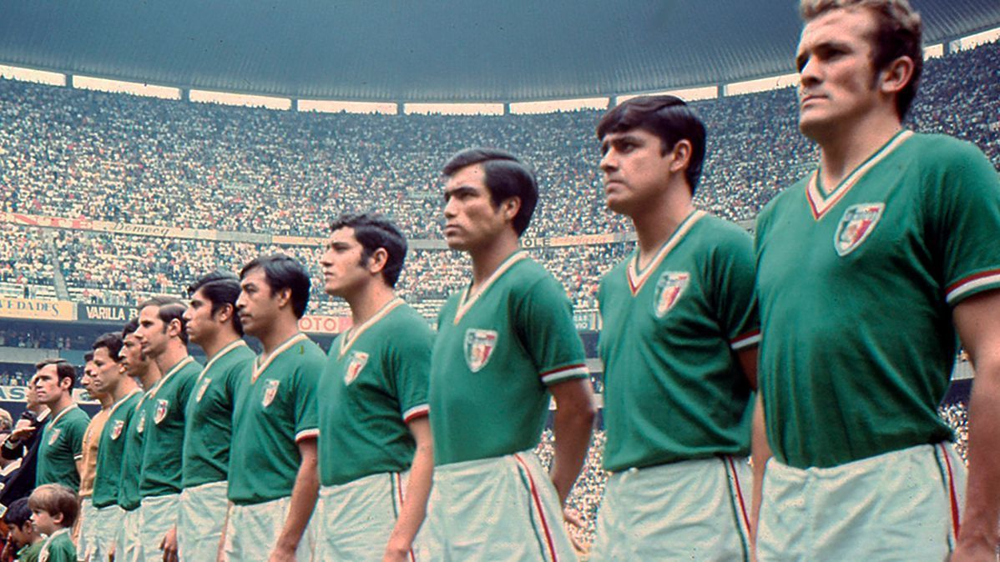

México 🇲🇽
Sin títulos📍 Sede / Ciudad: Ciudad de México (Estadio Azteca) / Monterrey (Estadio BBVA)

🇲🇽 Selección Mexicana en la historia de los Mundiales
México nunca ha ganado la Copa Mundial de la FIFA en la categoría mayor. Su mejor resultado histórico en el torneo absoluto han sido los cuartos de final, los cuales alcanzó en dos ocasiones.
Participaciones (18)
1930, 1950, 1954, 1958, 1962, 1966, 1970, 1978, 1986, 1994, 1998, 2002, 2006, 2010, 2014, 2018, 2022, 2026.
Estadísticas Mundiales
16 Victorias | 14 Empates | 28 Derrotas
⭐ Mejor participación: Cuartos de final (1970 y 1986)
Clasificación al Mundial 2026
México participa como uno de los países anfitriones del Mundial 2026 junto a Estados Unidos y Canadá.
Historia en la Copa
México es una de las selecciones con más participaciones en la Copa del Mundo. Ha sido protagonista en múltiples ediciones y es reconocida por su gran apoyo de aficionados, su tradición futbolística y su presencia constante en el torneo.
💡 Curiosidad
México es la selección con más participaciones consecutivas en Mundiales después de las grandes potencias tradicionales. Además, organizó dos Copas del Mundo: 1970 y 1986.
Jugadores Convocados
- Luis Malagón
- Guillermo Ochoa
- Edson Álvarez
- Hirving Lozano
- Raúl Jiménez
- Santiago Giménez
- Julián Quiñones
- Orbelín Pineda
- Johan Vásquez
- César Montes
- Jesús Gallardo
- Uriel Antuna